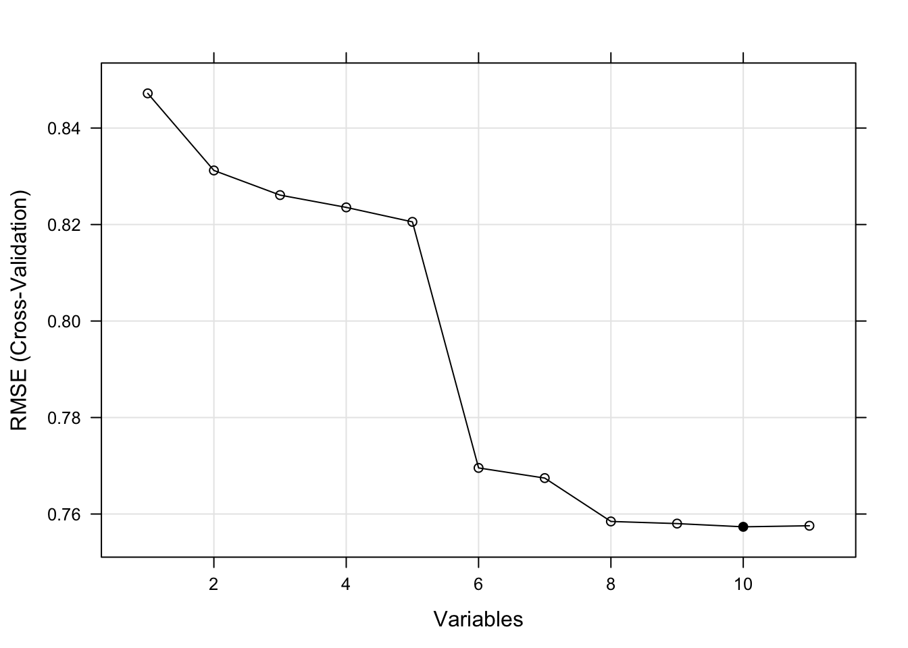
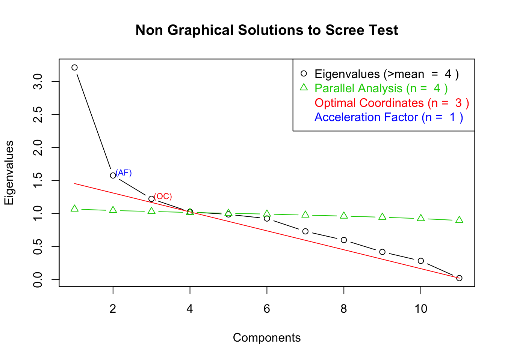

Objectives:
The objective of this document is to give a brief introduction to dimensionality reduction and discretization. At the end of this tutorial you will have learned
Dimensionality reduction is performed in two different ways. The first one is feature subset selection and the second one is feature reduction or extraction. This tutorial will briefly cover both of these topics.
Let’s load our main data to use:
data <- read.csv(url("https://archive.ics.uci.edu/ml/machine-learning-databases/wine-quality/winequality-white.csv"),
header = T, sep=";")Feature subset selection aims to select an optimal subset of existing features for modelling purposes. There are two ways to perform feature subset selection: by using wrappers or by using filters. This tutorial will briefly cover both of these topics.
Wrappers are methods that evaluate predictor (feature) performance by adding/removing them into models and measuring the model performance.
For wrapper methods, we will use the caret package.
# if ("caret" %in% rownames(installed.packages()) == FALSE){
# install.packages("caret")
# }
require(caret)When using recursive feature elimination, initially all variables are included in the model. Later, by removing variables, model performance is recomputed and optimal set of features is determined.
In caret package, recursive feature elimination can be utilized with several models such as linear regression (lmFuncs), random forests (rfFuncs), naive Bayes (nbFuncs) and bagged trees (treebagFuncs). You can also use other functions that can be used with caret’s train function. For further information, check caret’s package documentation.
#subset the data
data.train.index <- createDataPartition(data[,12], p=.8, list = F, times = 1)
data.train <- data[data.train.index,]
#Set the control variables for feature selection
#We are using linear regression model (lmFuncs) and cross-validation (cv) method to verify with 10 cross-validations
control.rfe <- rfeControl(functions=lmFuncs, method="cv", number=10)
#x defines predictors, while y defines the output
results.rfe <- rfe(x = data.train[,-12], y = data.train[,12], sizes = c(1:11),
rfeControl = control.rfe)
print(results.rfe) #Print the results##
## Recursive feature selection
##
## Outer resampling method: Cross-Validated (10 fold)
##
## Resampling performance over subset size:
##
## Variables RMSE Rsquared MAE RMSESD RsquaredSD MAESD Selected
## 1 0.8298 0.1094 0.6472 0.03311 0.03317 0.02050
## 2 0.8119 0.1472 0.6333 0.03371 0.03407 0.02252
## 3 0.8115 0.1483 0.6329 0.03359 0.03341 0.02219
## 4 0.8088 0.1539 0.6309 0.03327 0.03227 0.02191
## 5 0.7986 0.1750 0.6239 0.03853 0.04748 0.02557
## 6 0.7603 0.2523 0.5932 0.02890 0.02480 0.01603
## 7 0.7451 0.2815 0.5845 0.02778 0.02488 0.01632
## 8 0.7446 0.2827 0.5839 0.02780 0.02520 0.01650
## 9 0.7440 0.2838 0.5835 0.02857 0.02688 0.01708
## 10 0.7435 0.2850 0.5815 0.02649 0.02597 0.01634 *
## 11 0.7436 0.2849 0.5816 0.02646 0.02593 0.01642
##
## The top 5 variables (out of 10):
## density, volatile.acidity, pH, sulphates, chloridespredictors(results.rfe) #Print the names of selected variables## [1] "density" "volatile.acidity" "pH"
## [4] "sulphates" "chlorides" "alcohol"
## [7] "residual.sugar" "fixed.acidity" "citric.acid"
## [10] "free.sulfur.dioxide"trellis.par.set(caretTheme())#Set the theme for the RMSE plor
plot(results.rfe, type = c("g","o"))#Plot RMSE
In the table, RMSE refers to “root mean squared error”. In general, we want this to be as low as possible (while also paying attention to possible over fitting problems).
Feature reduction or feature extraction techniques aim to generate new, more informative features using the existing set of features. They aim to incorporate the information provided by existing features into a lower number of newly generated features.
Linear feature extraction techniques aim to generate new features by using a linear combination of existing features.
Principle component analysis (PCA) projects the entire n-feature set into a k linearly independent features (k<=n). Instead of using the original variables, you can use the computed principle components for modelling.
fit.pca <- prcomp(data.train[,-12])
summary(fit.pca)## Importance of components:
## PC1 PC2 PC3 PC4 PC5 PC6
## Standard deviation 43.5185 12.89449 4.56672 1.02789 0.83061 0.13583
## Proportion of Variance 0.9093 0.07983 0.01001 0.00051 0.00033 0.00001
## Cumulative Proportion 0.9093 0.98912 0.99914 0.99964 0.99997 0.99998
## PC7 PC8 PC9 PC10 PC11
## Standard deviation 0.11941 0.10694 0.09175 0.01977 0.0004702
## Proportion of Variance 0.00001 0.00001 0.00000 0.00000 0.0000000
## Cumulative Proportion 0.99999 1.00000 1.00000 1.00000 1.0000000Based on the PCA summary, we can see that the first two principle components account for 98% of the variance in the data, so we can use these components, instead of the whole dataset.
new.data.pca <- fit.pca$x[,1:2]
summary(new.data.pca)## PC1 PC2
## Min. :-357.112 Min. :-45.26017
## 1st Qu.: -29.523 1st Qu.: -7.92953
## Median : 4.533 Median : -0.04172
## Mean : 0.000 Mean : 0.00000
## 3rd Qu.: 31.137 3rd Qu.: 7.49399
## Max. : 131.903 Max. :165.84849Singular value decomposition (SVD) is similar to PCA. It also uses projection to lower dimensions. The SVD is a numerical method while PCA is an analysis approach. In R, prcomp functions uses svd (numerical method) to calculate principle components which is more stable than using the euclidean distance. The output of prcomp function is better in terms of interpretability than the output of svd function. Also, summary function does not work properly for the output of svd.
fit.svd <- svd(data.train[,-12])To see the amount of variance each component accounts for, use the following code:
cumsum(fit.svd$d)/sum(fit.svd$d)## [1] 0.8652279 0.9398522 0.9668745 0.9910389 0.9962666 0.9978527 0.9985442
## [8] 0.9991717 0.9997077 0.9998881 1.0000000According to the results, first two components account for 94% of variance and we can use those two.
new.data.svd <- fit.svd$u[,1:2]
summary(new.data.svd)## V1 V2
## Min. :-0.053074 Min. :-0.0551928
## 1st Qu.:-0.018439 1st Qu.:-0.0100693
## Median :-0.014808 Median :-0.0004085
## Mean :-0.015290 Mean :-0.0002006
## 3rd Qu.:-0.011974 3rd Qu.: 0.0090397
## Max. :-0.001267 Max. : 0.2108983As mentioned previously, using prcomp is more intuitive and easier than using svd.
Factor analysis is a general term of methods that use linear projection (such as PCA). Instead of using a specific method, we can use general factor analysis to reduce the dimensionality.
First, we need to determine the number of factors we want to obtain.
# if ("nFactors" %in% rownames(installed.packages()) == FALSE){
# install.packages("nFactors")
# }
library(nFactors)
ev <- eigen(cor(data.train[,-12])) # get eigenvalues
ap <- parallel(subject=nrow(data.train[,-12]),var=ncol(data.train[,-12]),
rep=100,cent=.05)
nS <- nScree(x=ev$values, aparallel=ap$eigen$qevpea)
plotnScree(nS)
At the scree plot that we have obtained, optimal coordinates is determined as 3. This means, the optimal number of factors that explain the variability in the data is three.
So we can now obtain our factors:
fit.fa <- factanal(data.train[,-12], 3, rotation="varimax")
print(fit.fa, digits=2, cutoff=.1, sort=TRUE)##
## Call:
## factanal(x = data.train[, -12], factors = 3, rotation = "varimax")
##
## Uniquenesses:
## fixed.acidity volatile.acidity citric.acid
## 0.00 0.99 0.91
## residual.sugar chlorides free.sulfur.dioxide
## 0.00 0.86 0.89
## total.sulfur.dioxide density pH
## 0.69 0.00 0.72
## sulphates alcohol
## 0.97 0.16
##
## Loadings:
## Factor1 Factor2 Factor3
## residual.sugar 0.86 0.14 0.48
## total.sulfur.dioxide 0.53 -0.13
## density 0.96 0.26
## alcohol -0.78 0.47
## fixed.acidity 0.99 -0.11
## volatile.acidity
## citric.acid 0.29
## chlorides 0.26 -0.27
## free.sulfur.dioxide 0.33
## pH -0.46 -0.26
## sulphates -0.16
##
## Factor1 Factor2 Factor3
## SS loadings 2.75 1.38 0.66
## Proportion Var 0.25 0.13 0.06
## Cumulative Var 0.25 0.38 0.44
##
## Test of the hypothesis that 3 factors are sufficient.
## The chi square statistic is 4812.34 on 25 degrees of freedom.
## The p-value is 0As we have mentioned previously that factors are linear combinations of variables. fit.pa$loadings hold the information of which variable is included in which factor and its coefficient in linear combination.
Non-linear feature extraction techniques aim to generate new features by using a non-linear combination of existing features.
Multidimensional scaling uses similarity measures to reduce the dimension of the data. First we compute a distance matrix and based on that distance matrix, we reduce the dimension.
d <- dist(data.train[,-12])
fit.mds <- cmdscale(d,eig=TRUE, k=2) #Reduce data to two variables
new.data.mds <- fit.mds$pointsYou can use new.data.mds instead of all the variables in the dataset.
Isomap is a similar function to multidimensional scaling and it extends metric multidimensional scaling (MDS) by incorporating the geodesic distances imposed by a weighted graph.
# if ("vegan" %in% rownames(installed.packages()) == FALSE){
# install.packages("vegan")
# }
require(vegan)
d <- vegdist(data.train[,-12])
fit.iso <- isomap(d, ndim=2, k = 3, fragmentedOK = T)
#Reduce data to two variables (ndim) and retain 3 (k) distances per data point.
#Data might be fragmented, we tell the function that it's ok.
new.data.iso <- fit.iso$pointsFeature selection is basically selecting the most appropriate subset of attributes based on the target attribute. Here, we will cover Minimum Redundancy Maximum Relevance (mRMR) feature selection. Note that there are other methods available for feature selection such as mutual information based criterion.
mRMR tries to maximize relevance according to the target variable based on mutual information and chooses a variable where the mutual information between the variable and the others is the least minimum (minimize redundancy).
In order to perform mRMR feature selection, we will use mRMRepackage.
# if ("mRMRe" %in% rownames(installed.packages()) == FALSE){
# install.packages("mRMRe")
# }
require(mRMRe)
data(cgps) #load the dataWe will use mRMR.classic function to select features. This function requires data frame with the columns of the following types: “numeric”, “ordered_factor” and “Surv”. Also, we should convert the data set as mRMRe.Data type. Then, we will use the mRMR.classic function with the parameters: data, target_indices (index of the target feature (column) from the data matrix), and feature_count (number of features to be selected by mRMR feature selection). In this example, we will select 3 features for 3 different target variables.
# Convert the data type
feature_data <- mRMR.data(data = data.frame(cgps.ge))
# Create an mRMR filter and obtain the indices of selected features
filter3 <- mRMR.classic(data = feature_data, target_indices = 3:5,
feature_count = 3)
solutions(filter3)## $`3`
## [,1]
## [1,] 592
## [2,] 805
## [3,] 673
##
## $`4`
## [,1]
## [1,] 578
## [2,] 339
## [3,] 251
##
## $`5`
## [,1]
## [1,] 149
## [2,] 586
## [3,] 160As the output, we can see the three features selected for each target index. For example; mRMR function selected 592nd, 805th and 673th variables for the 3rd target variable; 578th, 339th and 251st variables for the 4th target variable, and 149th, 586th and 160th variables for the 5th target variable.
Discretization methods aim to discretize continuous variables. For discretization we will use two packages. Namely, discretization and arules.
Assume that we want to perform binning (either equal width or equal frequency), following code allows us to do that. Initially, we have a data frame of 11 predictor variables and one outcome variable. We want to discretize the predictor variables which are numeric. discretize function only works on vectors. Instead of discretizing all of the predictor variables one by one inside a for loop, we can use the lapply function which takes a function and applies it to all of the variables in a data frame. discretize function takes three main inputs: the data vector to be discretized, the method and the number of categories. Inside the lapply function, we also need to determine the method and the number of categories. lapply splits the data frame into vectors and gives them to the function as input. lapply returns a list as an output.
discretize function returns a vector of factors which represent the interval that that particular data point falls into. So if you want the numeric discretization, you need to apply as.numeric function to all variables, again we use lapply for this. Finally, we convert the list back to a data frame. For association mining, you may want to keep the factor form of discretization.
#Install and load packages
# if ("arules" %in% rownames(installed.packages()) == FALSE){
# install.packages("arules")
# }
require(arules)
#Loop through all variables in dataset to discretize.
data.eqw <- NULL
for (i in 1:11){
d <- discretize(data.train[,i], method = "interval", categories =3)
data.eqw <- cbind(data.eqw, d)
}
names(data.eqw) <- names(data.train[,-12])#Or equivalently we can use lapply syntax
#Apply equal width binning discretization to all variables in dataset.
data.eqw <- data.frame(lapply(data.train[,-12],
FUN = discretize, method = "interval", categories = 3))
#Take a look at first few data points in the data.eqw
head(data.eqw)## fixed.acidity volatile.acidity citric.acid residual.sugar chlorides
## 1 [3.9,7.33) [0.08,0.42) [0,0.553) [10.9,21.3) [0.012,0.123)
## 2 [3.9,7.33) [0.08,0.42) [0,0.553) [0.6,10.9) [0.012,0.123)
## 3 [7.33,10.8) [0.08,0.42) [0,0.553) [0.6,10.9) [0.012,0.123)
## 4 [3.9,7.33) [0.08,0.42) [0,0.553) [0.6,10.9) [0.012,0.123)
## 5 [3.9,7.33) [0.08,0.42) [0,0.553) [0.6,10.9) [0.012,0.123)
## 6 [7.33,10.8) [0.08,0.42) [0,0.553) [0.6,10.9) [0.012,0.123)
## free.sulfur.dioxide total.sulfur.dioxide density pH
## 1 [2,97.7) [153,297) [0.995,1) [2.72,3.09)
## 2 [2,97.7) [10,153) [0.987,0.995) [3.09,3.45)
## 3 [2,97.7) [10,153) [0.995,1) [3.09,3.45)
## 4 [2,97.7) [153,297) [0.995,1) [3.09,3.45)
## 5 [2,97.7) [153,297) [0.995,1) [3.09,3.45)
## 6 [2,97.7) [10,153) [0.995,1) [3.09,3.45)
## sulphates alcohol
## 1 [0.22,0.507) [8,10)
## 2 [0.22,0.507) [8,10)
## 3 [0.22,0.507) [10,12)
## 4 [0.22,0.507) [8,10)
## 5 [0.22,0.507) [8,10)
## 6 [0.22,0.507) [10,12)#Turn it into a numeric data frame
data.eqw <- data.frame(lapply(data.eqw, as.numeric))
#Take a second look at first few data points in the data.eqw
head(data.eqw)## fixed.acidity volatile.acidity citric.acid residual.sugar chlorides
## 1 1 1 1 2 1
## 2 1 1 1 1 1
## 3 2 1 1 1 1
## 4 1 1 1 1 1
## 5 1 1 1 1 1
## 6 2 1 1 1 1
## free.sulfur.dioxide total.sulfur.dioxide density pH sulphates alcohol
## 1 1 2 2 1 1 1
## 2 1 1 1 2 1 1
## 3 1 1 2 2 1 2
## 4 1 2 2 2 1 1
## 5 1 2 2 2 1 1
## 6 1 1 2 2 1 2#For equal frequency
data.eqf <- lapply(data.train[,-12],
FUN = discretize, method = "frequency", categories = 3)
data.eqf <- data.frame(lapply(data.eqf, as.numeric)) #For k-means clustering discretization
data.eqc <- lapply(data.train[,-12],
FUN = discretize, method = "cluster", categories = 3)
data.eqc <- data.frame(lapply(data.eqc, as.numeric)) #You can also use user-specified intervals
##Lets assume that we want to discretize by quantiles of each variable
cats <- data.frame(lapply(data.train[,-12], FUN = quantile)) #We need to add -Inf and Inf as lower and upper boundaries. #rep function replicates the given value or variable by given number.
cats <- rbind(rep(-Inf, 11), cats, rep(Inf,11))
#In this case we need to use mapply instead of lapply because
#we have multiple different inputs to the function for each variable
data.us <- data.frame(mapply(data.train[,-12],
FUN = discretize, method = "fixed", categories = cats))
data.us <- data.frame(lapply(data.us, as.numeric))If you want to use different boundaries for each variable, just bind them into a data.frame and pass it into mapply as we did above. Don’t forget to add -Inf and Inf.
We can also use Minimum Description Length Principle (mdlp) to discretize the data points, which uses entropy criterion to determine the optimal discretization. It returns two lists. One holds the cutpoints (boundaries) of the discretization, and the second one holds the discretized data. Keep in mind that mdlp is a supervised clustering method, so you need to provide the outcome variable along with the dataset. By default, mdlp assumes the last column in your data frame to be the outcome variable, which is true in our case as our outcome variable is “quality”.
#Install and load packages
# if ("discretization" %in% rownames(installed.packages()) == FALSE){
# install.packages("discretization")
# }
require(discretization)#Loop through all variables in dataset to discretize.
data.mdlp <- mdlp(data.train)
summary(data.mdlp$Disc.data)## fixed.acidity volatile.acidity citric.acid residual.sugar
## Min. :1.000 Min. :1.000 Min. :1.000 Min. :1.000
## 1st Qu.:1.000 1st Qu.:1.000 1st Qu.:3.000 1st Qu.:1.000
## Median :1.000 Median :2.000 Median :3.000 Median :2.000
## Mean :1.058 Mean :2.054 Mean :3.008 Mean :2.234
## 3rd Qu.:1.000 3rd Qu.:3.000 3rd Qu.:3.000 3rd Qu.:3.000
## Max. :2.000 Max. :4.000 Max. :4.000 Max. :4.000
## chlorides free.sulfur.dioxide total.sulfur.dioxide density
## Min. :1.000 Min. :1.000 Min. :1.000 Min. :1.00
## 1st Qu.:1.000 1st Qu.:2.000 1st Qu.:2.000 1st Qu.:2.00
## Median :2.000 Median :2.000 Median :3.000 Median :3.00
## Mean :1.877 Mean :2.138 Mean :2.885 Mean :2.93
## 3rd Qu.:3.000 3rd Qu.:2.000 3rd Qu.:4.000 3rd Qu.:4.00
## Max. :3.000 Max. :4.000 Max. :4.000 Max. :5.00
## pH sulphates alcohol quality
## Min. :1.000 Min. :1.000 Min. :1.000 Min. :3.000
## 1st Qu.:1.000 1st Qu.:2.000 1st Qu.:2.000 1st Qu.:5.000
## Median :1.000 Median :2.000 Median :3.000 Median :6.000
## Mean :1.316 Mean :2.145 Mean :2.974 Mean :5.881
## 3rd Qu.:2.000 3rd Qu.:2.000 3rd Qu.:4.000 3rd Qu.:6.000
## Max. :2.000 Max. :3.000 Max. :5.000 Max. :9.000Useful Links:
Further useful documents will be uploaded to METU Class.